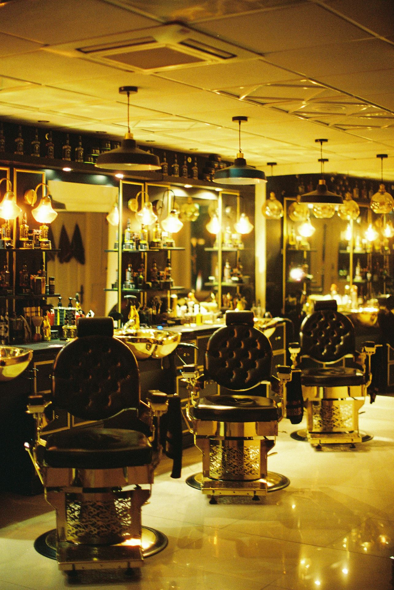
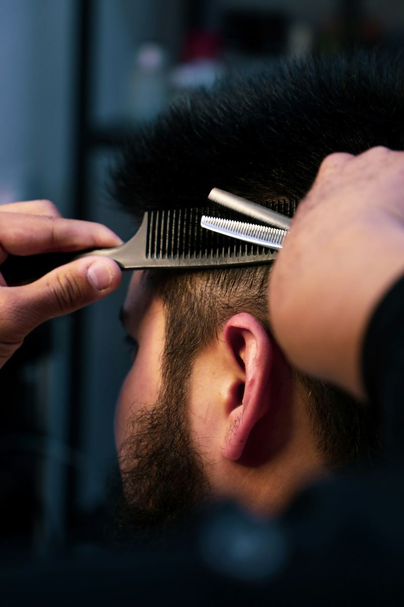
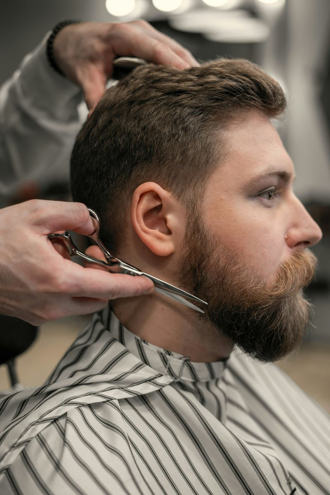
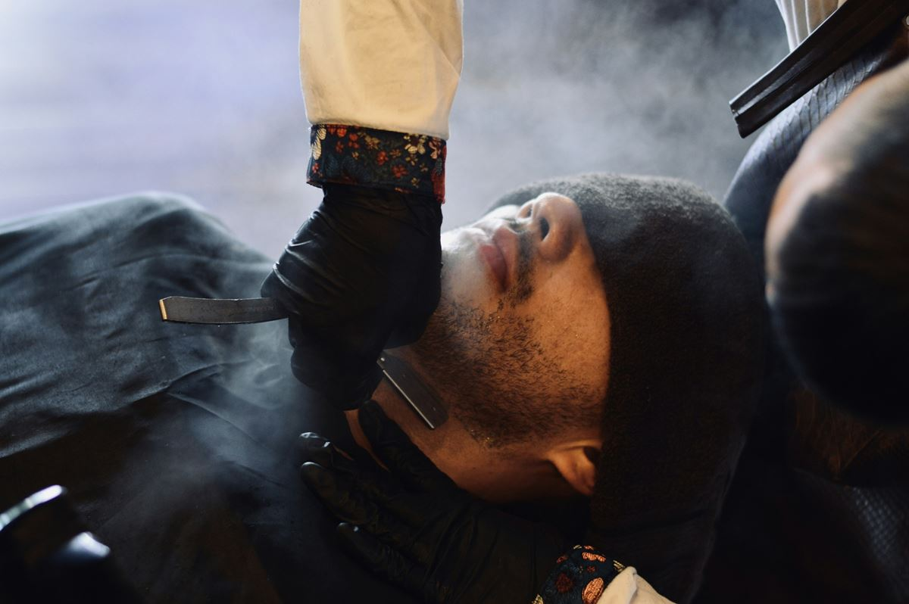
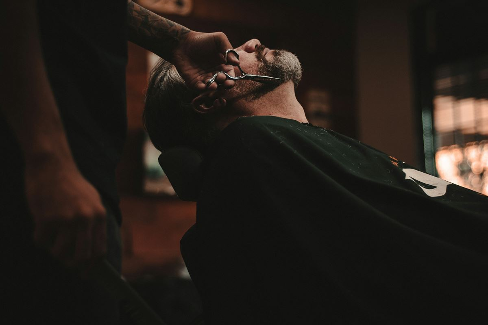

54°31′ N · 18°32′ E · Gdynia Śródmieście
Kotwica Barber Club
Rzuć kotwicę. Wypłyń odmieniony.
Barber w portowym klimacie w centrum Gdyni. Klasyczne strzyżenia, fade, broda i golenie brzytwą z gorącym ręcznikiem. Trzech barberów, bez pośpiechu, z kawą na start.
Usługi
Co robimy na pokładzie
Strzyżemy, prowadzimy brody i golimy brzytwą. Każda wizyta zaczyna się od rozmowy o tym, czego chcesz.
-

Strzyżenie
Klasyka nożyczkami, skin fade i strzyżenie dzieci.
od 50 zł -

Broda
Trymowanie, kontur brzytwą i koloryzacja.
od 50 zł -

Golenie i pielęgnacja
Brzytwa z gorącym ręcznikiem, golenie głowy, odsiwianie.
od 30 zł -

Pakiety
Kapitan, Admirał oraz Ojciec i syn.
od 140 zł
Wyznacz kurs
Ile masz czasu w porcie?
Przestaw telegraf. Pokażemy, co zmieścisz w swoim postoju i kto z załogi to zrobi.
Szybki postój, do 30 minut
Wpadasz między spotkaniami i wychodzisz ogarnięty.
-
Strzyżenie maszynką na jedną długość
50 zł20 min
Robi: Bartosz, Igor
-
Konturowanie brody brzytwą
50 zł20 min
Ostre linie policzków i szyi brzytwą, z ciepłym ręcznikiem.
Robi: Bartosz
-
Trymowanie i modelowanie brody
70 zł30 min
Nadanie kształtu, konturowanie maszynką, olejek i balsam.
Robi: Kacper, Bartosz, Igor
-
Strzyżenie dziecięce (do 12 lat)
65 zł30 min
Robi: Igor
-
Koloryzacja brody
od 70 zł30 min
Robi: Bartosz
-
Odsiwianie włosów
od 90 zł30 min
Robi: Igor
-
Depilacja woskiem nosa i uszu
30 zł10 min
Robi: Igor
Godzina w porcie, 40-60 minut
Pełne strzyżenie albo golenie bez pośpiechu.
-
Strzyżenie męskie klasyczne
90 zł45 min
Konsultacja, mycie, strzyżenie maszynką i nożyczkami, stylizacja.
Robi: Kacper, Bartosz
-
Skin fade
110 zł1 h
Cieniowanie od skóry z precyzyjnym przejściem, góra nożyczkami lub maszynką.
Robi: Kacper, Igor
-
Strzyżenie nożyczkami (dłuższe włosy)
od 120 zł1 h
Dla dłuższych fryzur. Cena zależy od długości i gęstości włosów.
Robi: Kacper
-
Golenie brzytwą z gorącym ręcznikiem
95 zł45 min
Tradycyjne golenie na mokro: gorący ręcznik, piana z pędzla, brzytwa, chłodny kompres.
Robi: Bartosz
-
Golenie głowy brzytwą
85 zł40 min
Robi: Bartosz
Długi rejs, 75-90 minut
Pakiety, czyli wszystko za jednym zawinięciem do portu.
-
Pakiet Kapitan (strzyżenie + broda)
150 zł1 h 15 min
Strzyżenie męskie klasyczne lub fade plus trymowanie i modelowanie brody.
Robi: Kacper, Bartosz, Igor
-
Pakiet Admirał (strzyżenie + golenie brzytwą)
180 zł1 h 30 min
Strzyżenie plus pełne golenie brzytwą z gorącym ręcznikiem.
Robi: Kacper, Bartosz
-
Ojciec i syn
140 zł1 h 15 min
Strzyżenie dla taty i syna do 12 lat, jedna po drugiej.
Robi: Igor
Dziennik rejsu
Jak wygląda wizyta
-
Wpis 01
Kawa na start
Kawa, herbata albo woda z cytryną. W cenie wizyty.
-
Wpis 02
Rozmowa
Pytamy, czego chcesz i jak układasz włosy na co dzień.
-
Wpis 03
Fotel bez pośpiechu
Nie strzyżemy na akord. Siedzisz tyle, ile trzeba.
-
Wpis 04
Wypływasz odmieniony
Stylizacja na koniec i możesz wracać na ląd.

Od 2019
Port kilka ulic od nabrzeża
Granat, mosiądz, ciemne drewno i liny zamiast tapety.
Gdynia zawsze żyła z portu, a my chcieliśmy miejsca, które to czuć. Strzyżemy w trzech, każdy ma swoją specjalność, a każda wizyta zaczyna się od rozmowy.
Z księgi pokładowej
Opinie
-
Pierwszy raz od lat wyszedłem z fryzurą, która dobrze wygląda też trzeciego dnia. Kacper najpierw zapytał, jak się czeszę rano, i to robi różnicę.
Michał K. (przykładowa opinia)Google (przykład) -
Golenie brzytwą u Bartka to 45 minut spokoju. Gorący ręcznik, zero podrażnień, broda wreszcie ma kształt.
Tomasz W. (przykładowa opinia)Google (przykład) -
Chodzimy z synem na pakiet Ojciec i syn. Igor ma do dzieciaków anielską cierpliwość, a młody sam pilnuje terminu.
Paweł R. (przykładowa opinia)Facebook (przykład) -
Skin fade równy jak linijka. Rezerwacja online w minutę, SMS dzień wcześniej, punktualnie co do minuty.
Jakub S. (przykładowa opinia)Google (przykład)
Zarezerwuj miejsce przy nabrzeżu
Wybierasz usługę, barbera i wolną godzinę. Rezerwacja online zajmuje minutę, bez dzwonienia w trakcie strzyżenia.